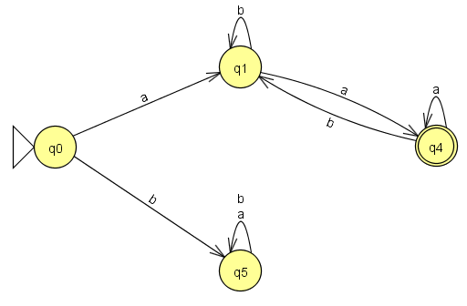

[⭐⭐] 28. Automata 1. (3 pont)
Egy automatának vannak állapotai és átmenetei. Az alábbi ábrán egy automata látható:

A karikák (q0, q1, q4 és q5) jelölik az állapotokat, a kis nyilacskák pedig az átmeneteket.
Az automatának van egy kezdőállapota (ez a q0, az előtte látható nyílból lehet felismerni), illetve vannak végállapotok (azok az állapotok, amik duplán be vannak karikázva, jelen esetben csak a q4,
de egyébként több is lehetne ilyen).
Az átmenetek azt mondják, hogy egy adott betű hatására melyik állapotba menjünk át. Például, ha a q1 állapotban vagyunk és egy "a" betűt kapunk, akkor átmegyünk a q4-be. Ha a q5-ben vagyunk, akkor
akár "a", akár "b" betűt kapunk, mindenképpen maradunk a q5-ben. Kezdetben mindig a kezdőállapotban vagyunk.
Az automatának odaadhatunk egy szót, amit vagy felismer, vagy nem. Minden karakter hatására tesz egy átmenetet. Ha a szó végigolvasása után végállapotban vagyunk, akkor a szót felismerte, egyébként nem.
Vigyázat, előfordulhat, hogy a szó egy adott pontján végállapotban vagyunk, de később kikerülünk onnan (pl. a q4-ből "b" betű hatására visszakerülünk a q1-be).
Például ha a kapott szó "abba", akkor az alábbi lépések hajtódnak végre:
- Elindulunk a kezdőállapotból (q0), és mivel az első betű "a", így a q1 állapotba fogunk továbbmenni
- A következő betű "b", tehát maradunk a q1-ben
- A következő betű megint "b", tehát továbbra is a q1 állapotban vagyunk
- A következő betű "a", tehát a q1-ből tovább megyünk a q4-be
- A szó összes betűjét feldolgoztuk. Mivel végállapotban vagyunk, így a kapott szót felismertük
A fenti automata egyébként azokat a szavakat ismeri fel, amik legalább 2 karakterből állnak, emellett "a" betűvel kezdődnek és "a" betűvel végződnek.
A programunkban egy speciális alakú automatát kell kezelnünk: determinisztikus automatát. Ezekről azt kell tudni, hogy minden állapotból minden betű hatására el tudjuk dönteni, hogy pontosan
hova kell tovább menni. Tehát nincs olyan, hogy egy állapotból két olyan nyíl vezet ki, amire két egyforma betű van írva.
Az Allapot osztály már meg van valósítva. Tároljuk róla, hogy végállapot-e, illetve az átmeneteket egy HashMap-ben. A feladat az Automata osztályban megvalósítani a felismer
metódust, ami paraméterben egy szót vár. A metódus adja vissza, hogy az automata felismeri-e ezt a szót.
Az automata kezdőállapota adott, ezen keresztül tudjuk a többi állapotot elérni.